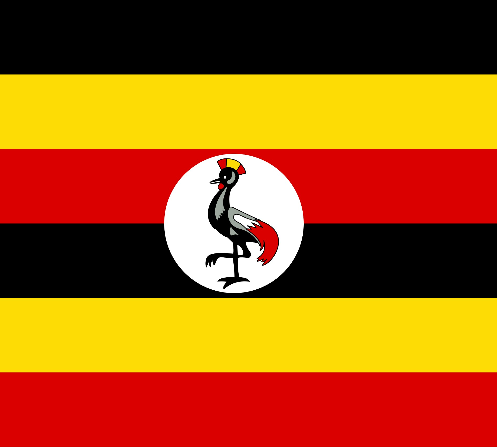

About me
Hello name is Brother Saleh Ntege, l was born in Uganda, Jinja where l live with my family. Am self employed with my small business of salon located in bugembe, Jinja. Am single still working on my carriar. Am doing computer programming and l love it, l love swimming, visiting new places and beholding advanture.

Official Flag of uganda
Uganda is a landlocked country located in East africa. She is bordered by south sudan to the north, the Democratic Republic of Congo to the west, Rwanda to the southwest, kenya to the east, and also Tanzania to the south. it has the source of the Nile River which is the longest River in africa and has several large water bodies, example like lake victoria, which is Africa's largest lake.It has beautifull scenaries.